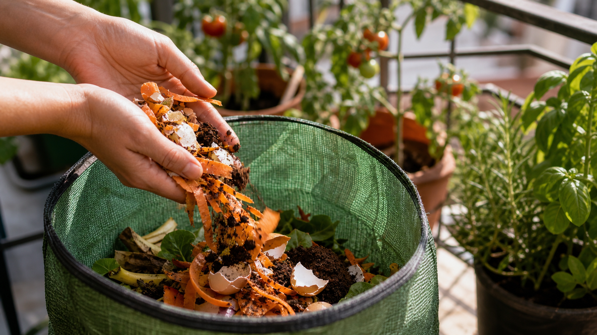

1. Qué es el compost y por qué compensa aunque tengas poco espacio
El compost es el resultado de descomponer materia orgánica — restos de fruta, verdura, cáscaras, hojas — hasta convertirla en un abono natural rico en nutrientes. En un huerto urbano en maceta, esto tiene un valor doble: reduces los residuos que van a la basura y produces tu propio sustrato para mejorar la tierra de tus macetas, sin tener que comprarlo.
La objeción más habitual es el espacio. Pero con los sistemas actuales de compostaje en pequeño formato — sacos de tela, cubos de fermentación bokashi, compostadores giratorios compactos — puedes compostar de forma eficaz con menos de medio metro cuadrado de balcón. Y sin olores, si sigues las reglas básicas.
2. Compost en balcón vs jardín — qué cambia
En un jardín el compost trabaja en pilas grandes, con espacio para airear, mucho volumen de material y tiempo. En un balcón las condiciones son distintas y cambia casi todo:
- Volumen menor: generas menos cantidad, así que necesitas un sistema que funcione bien con poco material.
- Ventilación limitada: sin aireación regular se forman zonas anaeróbicas que huelen mal. Por eso los sistemas con volteo o fermentación cerrada funcionan mejor en balcón.
- Temperatura: un balcón soleado puede acelerar mucho el proceso en verano, y ralentizarlo en invierno. El ritmo de maduración varía entre 6 semanas y 4 meses según el sistema y la época.
- El olor: gestionado bien, no debe haber. El mal olor es siempre señal de desequilibrio, no de que el compost en balcón sea imposible.
🌿 El sistema marca la diferencia: en balcón pequeño o cerrado, el bokashi (fermentación anaerobia en cubo cerrado) es casi siempre la mejor opción. En terraza con algo de espacio, un compostador giratorio es más cómodo y rápido.
3. Qué puedes echar y qué no
Esta es la parte más importante para evitar problemas de olor, plagas y un compost de mala calidad.
✅ Puedes echar
- Restos de fruta y verdura (peladura, semillas, corazones)
- Posos de café y filtros de papel
- Bolsas de té (sin grapas metálicas)
- Cáscaras de huevo (trituradas se descomponen antes)
- Hojas secas, poda pequeña troceada
- Servilletas y papel de cocina sin tintes
- Flores marchitas sin tratar con fitosanitarios
❌ No puedes echar
- Carne, pescado y sus restos
- Lácteos (queso, yogur, leche)
- Aceites y grasas cocinadas
- Excrementos de mascotas (perro, gato)
- Plantas enfermas o tratadas con fungicidas
- Restos con sal o condimentos fuertes
- Papel de cocina con productos de limpieza
4. Los 5 sistemas que funcionan en balcón
Ordenados de más económico a más avanzado. Cada uno tiene su caso de uso ideal.
Saco de compostaje con velcro
La opción de entrada perfecta si nunca has hecho compost. Se llena por arriba y se saca el compost ya hecho por la apertura de velcro de abajo, sin líos. Ideal para balcones pequeños.
🛒 Ver en Amazon →Compostador giratorio Outsunny
El equilibrio entre precio y comodidad. Girando el tambor cada pocos días airea la mezcla sola, sin que tengas que remover nada a mano. Va bien en balcón grande o terraza.
🛒 Ver en Amazon →Compostador VOUNOT 300L
Si tienes terraza amplia o jardín y generas más residuo de cocina o poda, este te da mucha más capacidad sin tener que vaciarlo cada dos por tres.
🛒 Ver en Amazon →Bokashi Skaza Organko 2
La mejor opción si tu balcón es muy pequeño o no le da el sol: fermenta en un cubo cerrado, cero olores, y puedes tenerlo hasta dentro de casa.
🛒 Ver en Amazon →Compostador eléctrico Ouaken 4L
Para quien no quiere esperar semanas: convierte los restos en compost en horas, sin bichos, sin olor y con filtro de carbón doble. La opción cómoda si el presupuesto no es problema.
🛒 Ver en Amazon →5. Paso a paso para montar tu primer compost
Sea cual sea el sistema que elijas, el proceso básico es el mismo:
- Elige la ubicación: un rincón del balcón con algo de sombra parcial es lo ideal. Evita el sol directo todo el día en verano (seca demasiado) y el interior de casa salvo que uses bokashi.
- Alterna capas verdes y marrones: los restos de cocina (húmedos, ricos en nitrógeno) van siempre combinados con material seco: hojas, cartón troceado, papel. La proporción ideal es 1 parte de verde por 2-3 partes de marrón. Si solo echas restos de cocina, se apelmazará y olerá.
- Controla la humedad: la mezcla debe estar húmeda como una esponja bien escurrida. Si está muy seca, añade un poco de agua; si está empapada, añade más material seco.
- Airea regularmente: cada 3-5 días, remueve o gira si tu sistema lo permite. Esto acelera la descomposición y evita zonas sin oxígeno que generan mal olor.
- Tiempo de maduración: entre 6 semanas (verano, compostador giratorio) y 3-4 meses (invierno, saco estático). El compost está listo cuando tiene aspecto de tierra oscura y huele a tierra de bosque, no a restos de comida.
🌿 Truco de las capas: guarda siempre un poco de material seco cerca del compostador para añadir cada vez que eches restos de cocina. Así mantienes el equilibrio sin tener que pensar en ello.
6. Errores típicos que generan mal olor o moscas
El mal olor y las moscas no son inevitables — son síntomas de un desequilibrio concreto, con solución clara:
- Huele a podrido o amoníaco: demasiado material húmedo y poca aireación. Añade material seco (cartón, hojas) y remueve bien.
- Aparecen moscas de la fruta: los restos de fruta no están bien cubiertos. Entiérralos siempre bajo una capa de material seco o tierra, y tapa el compostador entre uso y uso.
- No avanza, todo sigue igual: demasiado seco o demasiado frío. Añade agua y en invierno mueve el compostador a la zona más cálida y soleada del balcón.
- Se apelmaza y queda una masa dura: falta de material seco y de aireación. Rompe la masa con un palo o paleta y añade cartón troceado.
- Echar carne o pescado: es el error más frecuente y el que más problemas genera. Sin excepción, esos restos van a la basura.
7. Cómo usar el compost en tus macetas del balcón
Cuando el compost está maduro (aspecto de tierra oscura, olor a tierra de bosque), puedes usarlo de varias formas:
- Al plantar o trasplantar: mezcla hasta un 20-30% de compost maduro con tu sustrato. No más, para no alterar el drenaje.
- Como cobertura superficial (mulching): aplica una capa de 2-3 cm sobre la tierra de la maceta. Retiene humedad y libera nutrientes poco a poco con cada riego.
- Té de compost: diluye una pequeña cantidad en agua (1 parte de compost por 10 de agua), deja reposar unas horas y riega con esa mezcla. Es un abono líquido suave y ecológico.
Para saber cuánto compost necesita cada maceta y cuándo regar después de aplicarlo, consulta las herramientas de planificación:
← Volver a Guías de cultivo | Te puede interesar: Qué sustrato necesita tu huerto urbano · Abono para macetas: cuál comprar y cuándo usar